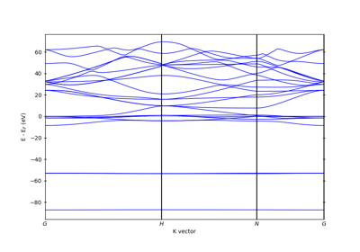
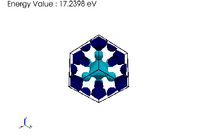

Examples#
Here is a gallery of several examples demonstrating what PyProcar can do!
Band Structure#
These examples demonstrate the band structure plotting capabilities.


Plotting non colinear band structures in Quantum Espresso
Plotting non colinear band structures in Quantum Espresso


Plotting band structure
Density of States#
These examples demonstrate the density of states plotting capabilities.


Bands and Dos plot#
These examples demonstrate the bandsdosplot plotting capabilities.

Fermi 2D#
These examples demonstrate the Fermi2D plotting capabilities.


Fermi 3D#
These examples demonstrate the Fermi3D plotting capabilities.



Plotting fermi3d isovalue_gif


Showing how to get van alphen fequencies from the fermi surface
Showing how to get van alphen fequencies from the fermi surface

Other#
These examples demonstrate other capabilities.